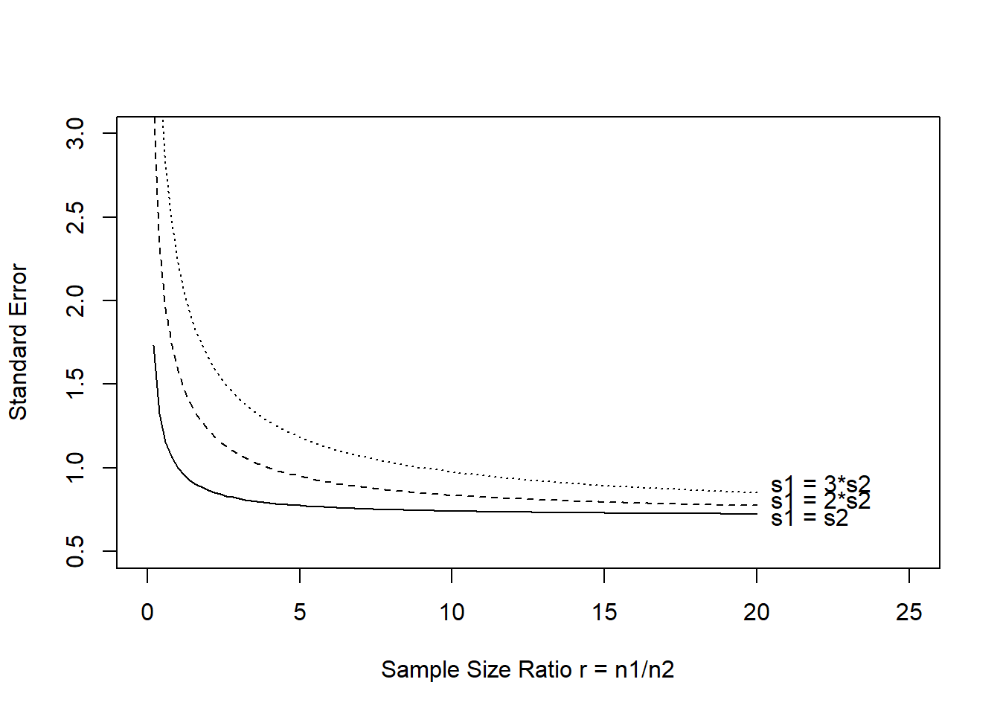

Code
tryCatch(source('pander_registry.R'), error = function(e) invisible(e))Lecture 05
October 7, 2024
tryCatch(source('pander_registry.R'), error = function(e) invisible(e))Goal of statistical inference is to estimate parameters accurately (unbiased) and with high precision
Measures of precision
Standard error (not standard deviation)
Width of confidence intervals
Power (equivalently, type II error rate)
Scientific hypotheses are typically refined in statistical hypotheses by identifying some parameter, \(\theta\), measuring differences in the distribution of the response variable
Often we are interested in if \(\theta\) differs across of levels of categorical (e.g. treatment/control) or continuous (e.g. age) predictor variables
\(\theta\) could be any summary measure such as
Difference/ratio of means
Difference/ratio of medians
Ratio of geometric means
Difference/ratio of proportions
Odds ratio, relative risk, risk difference
Hazard ratio
How to select \(\theta\)? In order of importance…
Scientific (clinical) importance. May be based on current state of knowledge
Is \(\theta\) likely to vary across the predictor of interest? Impacts the ability to detect a difference, if it exists.
Statistical precision. Only relevant if all other factors are equal.
Statistics is concerned with making inference about population parameters, (\(\theta\)), based on a sample of data
Frequentist estimation includes both point estimates (\(\hat{\theta}\)) and interval estimates (confidence intervals)
Bayesian analysis estimates the posterior distribution of \(\theta\) given the sampled data, \(p(\theta | \textrm{data})\). The posterior distribution can then be summarized by quantities like the posterior mean and 95% credible interval.
Consider the following results from 5 clinical trials of three drugs (A, B, C) designed to lower cholesterol compared to baseline. Assume a 10 unit drop in cholesterol (relative to baseline) is clinically meaningful.
| Trial | Drug | Pts | Mean diff | Std dev | Std error | 95% CI for diff | p-value |
|---|---|---|---|---|---|---|---|
| 1 | A | 30 | -30 | 191.7 | 49.5 | [-129, 69] | 0.55 |
| 2 | A | 1000 | -30 | 223.6 | 10 | [-49.6, -10.4] | 0.002 |
| 3 | B | 40 | -20 | 147.6 | 33 | [-85, 45] | 0.55 |
| 4 | B | 4000 | -2 | 147.6 | 3.3 | [-8.5, 4.5] | 0.54 |
| 5 | C | 5000 | -6 | 100.0 | 2 | [-9.9, -2.1] | 0.002 |
Compare the results of the different trials with respect to the sample size, mean difference, etc.
Which drug is effective at reducing cholesterol?
Why is study 4 more informative than study 3 (even though the \(p\) values are similar)?
Key points
Pure precision variables are associated with the outcome only
In a randomized trial where random treatment assignment is the predictor of interest it may be possible to have a pure precision variable by using stratified randomization
In observational research, there may be some correlation between the precision variable and the predictor of interest
flowchart LR X[Predictor\nof interest] --> Y[Outcome] W[Precision] --> Y[Outcome]
# Generate some data
set.seed(1231)
n <- 200
precisiondata <-
data.frame(W=rep(0:1, each=n/2),
X=runif(n),
Y=NA
)
precisiondata$Y <- 10 + 1.5*precisiondata$X + 10*precisiondata$W + rnorm(n,0,4)
precisiondata$W <- factor(precisiondata$W)library(ggplot2)
ggplot(precisiondata, aes(x=W,y=X)) + geom_boxplot()ggplot(precisiondata, aes(x=W,y=Y)) + geom_boxplot()ggplot(precisiondata, aes(x=X,y=Y)) + geom_point() + geom_smooth(method="lm")ggplot(precisiondata, aes(x=X,y=Y,color=W,group=W)) + geom_point() + geom_smooth(method="lm")summary(lm(Y ~ X, data=precisiondata))Fitting linear model: Y ~ X
| Min | 1Q | Median | 3Q | Max |
|---|---|---|---|---|
| -13.953 | -4.6804 | -0.76751 | 5.5132 | 13.526 |
| Estimate | Std. Error | t value | Pr(>|t|) | |
|---|---|---|---|---|
| (Intercept) | 13.8858 | 0.88218 | 15.7403 | 0.000000 |
| X | 3.4619 | 1.58179 | 2.1886 | 0.029796 |
| Observations | Residual Std. Error | \(R^2\) | Adjusted \(R^2\) |
|---|---|---|---|
| 200 | 6.2267 | 0.02362 | 0.018689 |
F-statistic: 4.78998 on 1 and 198 DF, pvalue: 0.0297956
summary(lm(Y ~ X + W, data=precisiondata))Fitting linear model: Y ~ X + W
| Min | 1Q | Median | 3Q | Max |
|---|---|---|---|---|
| -9.24 | -2.8797 | 0.34646 | 2.3857 | 11.717 |
| Estimate | Std. Error | t value | Pr(>|t|) | |
|---|---|---|---|---|
| (Intercept) | 9.1712 | 0.64172 | 14.2916 | 0.00000000 |
| X | 3.4659 | 1.02945 | 3.3667 | 0.00091453 |
| W1 | 9.4252 | 0.57310 | 16.4460 | 0.00000000 |
| Observations | Residual Std. Error | \(R^2\) | Adjusted \(R^2\) |
|---|---|---|---|
| 200 | 4.0524 | 0.58854 | 0.58436 |
F-statistic: 140.89 on 2 and 197 DF, pvalue: < 2.22e-16
library(finalfit)
explanatory = c("X", "W")
dependent = "Y"
finalfit(.data = precisiondata, dependent, explanatory)| Dependent: Y | unit | value | Coefficient (univariable) | Coefficient (multivariable) | |
|---|---|---|---|---|---|
| X | [0.0,1.0] | Mean (sd) | 15.6 (6.3) | 3.46 (0.34 to 6.58, p=0.030) | 3.47 (1.44 to 5.50, p=0.001) |
| W | 0 | Mean (sd) | 10.8 (4.1) | - | - |
| 1 | Mean (sd) | 20.3 (4.2) | 9.42 (8.27 to 10.58, p<0.001) | 9.43 (8.30 to 10.56, p<0.001) |
The sampling distribution is the probability distribution of a statistic
Most often we choose estimators that are asymptotically Normally distributed
For large \(n\), \(\hat{\theta} \sim N\left(\theta, \frac{V}{n} \right)\)
\(\hat{\theta}\) is our estimate of \(\theta\). The \(\hat{ }\) indicates it is an estimate.
Mean: \(\theta\)
Variance: \(V\), which is related to the “average amount of statistical information” available from each observation
“Large” \(n\) depends on the distribution of the underlying data. If \(n\) is large enough, approximate Normality of \(\hat{\theta}\) will hold.
Calculating \(100 (1-\alpha)\%\) confidence intervals \(\left(\theta_L, \theta_U \right)\) with approximate Normality
\(\theta_L = \hat{\theta} - Z_{1-\alpha/2} \sqrt{\frac{V}{n}}\)
\(\theta_U = \hat{\theta} + Z_{1-\alpha/2} \sqrt{\frac{V}{n}}\)
(estimate) \(\pm\) (crit val) \(\times\) (std err of estimate)
Can similarly calculate approximate two-sided \(p\)-values
What are the measures of (high) precision?
Estimators are less variable across studies, which is often measured by decreased standard error.
Narrower confidence intervals. Estimators are consistent with fewer hypotheses if the CIs are narrow.
Able to reject false hypotheses. Z statistic is higher when the alternative hypothesis is true.
Translation into sample size
Based on the width of the confidence interval
Choose a sample size such that a 95% CI will not contain both the null and design alternative
If both \(\theta_0\) and \(\theta_1\) cannot be in the CI, we have discriminated between those hypotheses
Based on statistical power
When the alternative is true, have a high probability of rejecting the null
In other words, minimize the type II error rate
Statistical power: Quick review
Power is the probability of rejecting the null hypothesis when the alternative is true
Pr(reject \(H_0 | \theta = \theta_1\))
Most often \(\hat{\theta} \sim N\left(\theta, \frac{V}{n} \right)\) so that the test statistic \(Z = \frac{\hat{\theta} - \theta_0}{\sqrt{V/n}}\) wll follow a Normal distribution
Under \(H_0\), \(Z \sim N(0, 1)\) so we reject \(H_0\) if \(|Z| > Z_{1-\alpha/2}\)
Under \(H_1\), \(Z \sim N\left(\frac{\theta_1 - \theta_0}{\sqrt{V/n}}, 1\right)\)
Power curves
The power function (power curve) is a function of the true value of \(\theta\)
We can compute power for every value of \(\theta\)
As \(\theta\) moves away from \(\theta_0\), power increases (for two-sided alternatives)
For any choice of desired power, there is always some \(\theta\) such that the study has that power
\(Pwr(\theta_0) = \alpha\), the type I error rate
mydiffs <- seq(-.8,.8,.05)
mypower <- vector("numeric", length(mydiffs))
mypower2 <- vector("numeric", length(mydiffs))
for(i in 1:length(mydiffs)){
mypower[i] <- power.t.test(n=100, sd=1, delta=mydiffs[i])$power
mypower2[i] <- power.t.test(n=100, sd=1.2, delta=mydiffs[i])$power
}
plot(mydiffs, mypower, xlab="True difference in means (theta)", ylab="Power", type="l", main="")
lines(mydiffs, mypower2, lty=2)
legend("top", c("sigma = 1.0","sigma = 1.2"), lty=1:2, inset=0.05)Standard errors are the key to precision
Greater precision is achieved with smaller standard errors
Standard errors are decreased by either decreasing \(V\) or increasing \(n\)
Typically: \(se(\hat{\theta}) = \sqrt{\frac{V}{n}}\)
Width of CI: \(2 \times (\textrm{crit value}) \times se(\hat{\theta})\)
Test statistic: \(Z = \frac{\hat{\theta} - \theta_0}{se(\hat{\theta})}\)
Observations are independent and identically distributed (iid)
\(\textrm{iid } Y_i \sim (\mu, \sigma^2), i = 1, \ldots, n\)
\(\theta = \mu\), \(\hat{\theta} = \frac{1}{n} \displaystyle \sum_{i=1}^n Y_i = \overline{Y}\)
\(V = \sigma^2\), \(se(\hat{\theta}) = \sqrt{\frac{\sigma^2}{n}}\)
Note that we are not assuming a specific distribution for \(Y_i\), just that the distribution has a mean and variance
We are assuming that \(n\) is large so asymptotic results are applicable
There are ways to decrease \(V\) including…
Restrict sample by age, gender, etc.
Take repeated measures on each subject, summarize, and perform test on summary measures
Better ideas (this course)
Difference of independent means
Observations no longer identically distributed, just independent. Group 1 has a different mean and variance than group 2
\(\textrm{ind } Y_{ij} \sim (\mu_j, \sigma_j^2), j = 1, 2; i = 1, \ldots, n_j\)
\(n = n_1 + n_2\); \(r = n_1 / n_2\)
\(\theta = \mu_1 - \mu_2\), \(\hat{\theta} = \overline{Y}_1 - \overline{Y}_2\)
\(V = (r+1)(\frac{\sigma_1^2}{r} + \sigma_2^2)\)
\(se(\hat{\theta}) = \sqrt{\frac{V}{n}} = \sqrt{\frac{\sigma_1^2}{n_1} + \frac{\sigma_2^2}{n_2}}\)
Difference of paired means
No longer iid. Group 1 has a different mean and variance than group 2, and observations are paired (correlated)
\(Y_{ij} \sim (\mu_j, \sigma_j^2), j = 1, 2; i = 1, \ldots, n\)
\(corr(Y_{i1}, Y_{i2}) = \rho; corr(Y_{ij}, Y_{mk}) = 0 \textrm{ if } i \neq m\)
\(\theta = \mu_1 - \mu_2\), \(\hat{\theta} = \overline{Y}_1 - \overline{Y}_2\)
\(V = \sigma_1^2+ \sigma_2^2 - 2 \rho \sigma_1 \sigma_2\)
\(se(\hat{\theta}) = \sqrt{\frac{V}{n}}\)
Precision gains are made when matched observations are positively correlated (\(\rho > 0\))
Usually the case, but possible exceptions
Sleep on successive nights
Intrauterine growth of litter-mates
Clustered data: Experiment where treatments/interventions are assigned based on the basis of “clusters”
Households
Schools
Clinics
Cities
Mean of clustered data
Up to \(n\) clusters, each of which have \(m\) subjects
\(corr(Y_{ij}, Y_{ik}) = \rho \textrm{ if } j \neq k\)
\(corr(Y_{ij}, Y_{mk}) = 0 \textrm{ if } i \neq m\)
\(\theta = \mu\), \(\hat{\theta} = \frac{1}{nm} \displaystyle \sum_{i=1}^{n} \sum_{j=1}^m Y_{ij} = \overline{Y}\)
\(V = \sigma^2 \left(\frac{1 + (m-1)\rho}{m} \right)\)
\(se(\hat{\theta}) = \sqrt{\frac{V}{n}}\)
What is V if …
\(\rho = 0\) (independent)
\(m = 1\)
\(m\) is large (e.g \(m = 1000\)) and \(\rho\) is 0, 1, or 0.01
With clustered data, even small correlations can be very important to consider
| Clusters (\(n\)) | \(m\) | \(\rho\) | Total N |
|---|---|---|---|
| 1000 | 1 | 0.01 | 1000 |
| 650 | 2 | 0.30 | 1300 |
| 550 | 2 | 0.10 | 1100 |
| 190 | 10 | 0.10 | 1900 |
| 109 | 10 | 0.01 | 1090 |
| 20 | 100 | 0.01 | 2000 |
Binary outcomes
\(\textrm{ind } Y_{ij} \sim B(1, p_j), i = 1, \ldots, n_j; j = 1, 2\)
\(n = n_1 + n_2; r = n_1 / n_2\)
\(\theta = \textrm{log}\left(\frac{p_1/(1-p_1)}{p_2/(1-p_2)} \right)\); \(\hat{\theta} = \textrm{log}\left(\frac{\hat{p}_1/(1-\hat{p}_1)}{\hat{p}_2/(1-\hat{p}_2)} \right)\)
\(\sigma^2_j = \frac{1}{p_j(1-p_j)} = \frac{1}{p_j(q_j)}\)
\(V = (r+1)(\frac{\sigma_1^2}{r} + \sigma_2^2)\)
\(se(\hat{\theta}) = \sqrt{\frac{V}{n}} = \sqrt{\frac{1}{n_1 p_1 q_1} + \frac{1}{n_2 p_2 q_2}}\)
Notes on maximum precision
Max precision is achieved when the underlying odds are near 1 (proportions near 0.5)
If we were considering differences in proportions, the max precision is achieved when the underlying proportions are near 0 or 1
Independent censored time to event outcomes
\((T_{ij}, \delta_{ij}), i = 1, \ldots, n_j; j = 1, 2\)
\(n = n_1 + n_2; r = n_1 / n_2\)
\(\theta = \textrm{log(HR)}\); \(\hat{\theta} = \hat{\beta}\) from proportional hazards (PH) regression
\(V = \frac{(r+1)(1/r+1)}{\textrm{Pr}(\delta_{ij} = 1)}\)
\(se(\hat{\theta}) = \sqrt{\frac{V}{n}} = \sqrt{\frac{(r+1)(1/r+1)}{d}}\)
In the PH model, statistical information is roughly proportional to \(d\), the number of observed events
Papers always report the number of events
Study design must consider how long it will take to observe events (e.g. deaths) starting from randomization
Independent continuous outcomes associated with covariates
\(\textrm{ind } Y_i | X_i ~ \sim(\beta_0 + \beta_1 X_i, \sigma^2_{Y|X}), i = 1, \ldots, n\)
\(\theta = \beta_1, \hat{\theta} = \hat{\beta_1}\) from LS regression
\(V = \frac{\sigma^2_{Y|X}}{\textrm{Var}(X)}\)
\(se(\hat{\theta}) = \sqrt{\frac{\hat{\sigma}^2_{Y|X}}{n \hat{\textrm{Var}}(X)}}\)
Precision tends to increases as the predictor (\(X\)) is measured over a wider range
Precision also related to the within group variance \(\sigma^2_{Y|X}\)
Options for increasing precision
Increase sample size
Decrease \(V\)
(Decrease confidence level)
Criteria for precision
Standard error
Width of confidence intervals
Statistical power
Select a suitable, scientifically meaningful alternative
Select desired power
Sample size calculation: The number of sampling units needed to obtain the desired precision
Level of significance \(\alpha\) when \(\theta = \theta_0\)
Power \(\beta\) when \(\theta = \theta_1\)
Variability \(V\) within one sampling unit
\(n = \frac{(z_{1-\alpha/2} + z_{1-\beta})^2 \times V}{(\theta_1 - \theta_0)^2}\)
When sample size is constrained (the usual case) either
Compute power to detect a specified alternative
\(1 - \beta = \phi \left(\frac{(\theta_1-\theta_0)}{\sqrt{V/n}} - z_{1-\alpha/2} \right)\)
\(\phi\) is the standard Normal cdf function
In STATA, use normprob for the \(\phi\) function
Compute alternative that can be detected with high power
Sample size required behaves like the square of the width of the CI. To cut the width of the CI in half, need to quadruple the sample size.
Positively correlated observations within the same group provide less precision than the same number of independent observations
Positively correlated observations across groups provide more precision
What power do you use?
Most popular is 80% (too low) or 90%
Key is to be able to discriminate between scientifically meaningful hypotheses
5.3 Comments on the optimal ratio of sample sizes (\(r\))
If we are constrained by the maximal sample size \(n = n_1 + n_2\)
Smallest \(V\) when \(r = \frac{n_1}{n_2} = \frac{\sigma_1}{\sigma_2}\)
In other words, smaller \(V\) if we sample more subjects from the more variable group
If we are unconstrained by the maximal sample size, there is a point of diminishing returns
Example: Case-control study where finding cases is difficult/expensive but finding controls is easy/cheap
Code
Code
